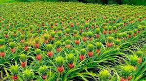

Pineapple: The Tropical Delight

Uses of Pineapple
Pineapples are a versatile fruit with many uses:
- Food and Beverages: Used fresh in salads, juices, and as a topping for various dishes.
- Industrial: Pineapple enzymes (bromelain) are used in tenderizing meat and in health supplements.
- Desserts: Commonly used in cakes, pies, and tropical-themed desserts.
Types of Pineapple
There are several popular varieties of pineapple:
- Queen: Smaller and sweeter, known for its intense flavor.
- Red Spanish: Tougher skin, commonly grown in the Caribbean.
- Cayenne: Large, juicier variety commonly used in canning.
- Pernambuco: Brazilian variety with a delicate flavor and pale flesh.
Growth Requirements for Pineapple
Pineapple plants thrive under the following conditions:
- Climate: Warm, tropical climates with temperatures between 22-30°C.
- Soil: Well-drained, sandy or loamy soil with a pH of 4.5-6.5.
- Water: Requires moderate watering, as pineapples are drought-resistant once established.
Natural Fertilizers for Pineapple
Organic fertilizers are beneficial for pineapple plants, promoting healthy growth:
- Compost: Enriches soil and improves its structure.
- Fish Emulsion: Provides nitrogen for lush leaf growth.
- Bone Meal: Supplies phosphorus, aiding in root and fruit development.
Pest and Disease Prevention
Common pests and diseases in pineapple plants can be managed by:
- Mealybugs: Managed with insecticidal soaps or neem oil.
- Fungal Rots: Prevented by avoiding waterlogged soil and ensuring good drainage.
- Fruit Flies: Controlled by covering fruits and removing fallen ones.
Benefits of Pineapple
- Rich in Vitamin C: Supports immune health and skin vitality.
- Digestive Aid: Bromelain helps in breaking down proteins for better digestion.
- Anti-Inflammatory: Contains antioxidants that help reduce inflammation.
Frequently Asked Questions
1. How long does it take for a pineapple plant to bear fruit?
Pineapple plants typically take 18-24 months to produce fruit after planting.
2. Can pineapples be grown in containers?
Yes, pineapples can be grown in containers as long as they receive plenty of sunlight and well-drained soil.
Back to Crop List